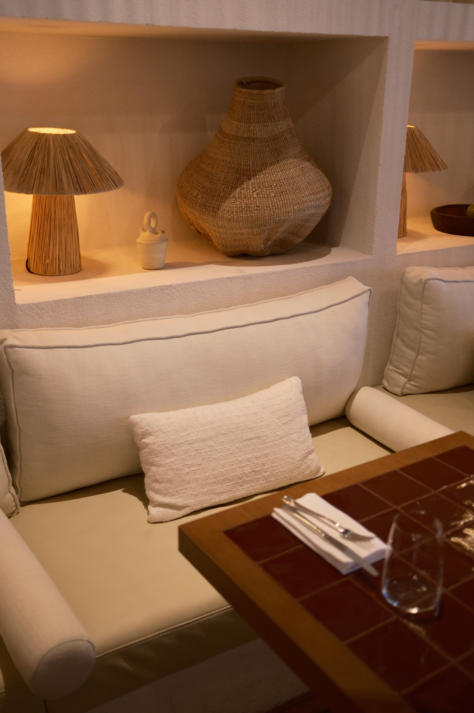
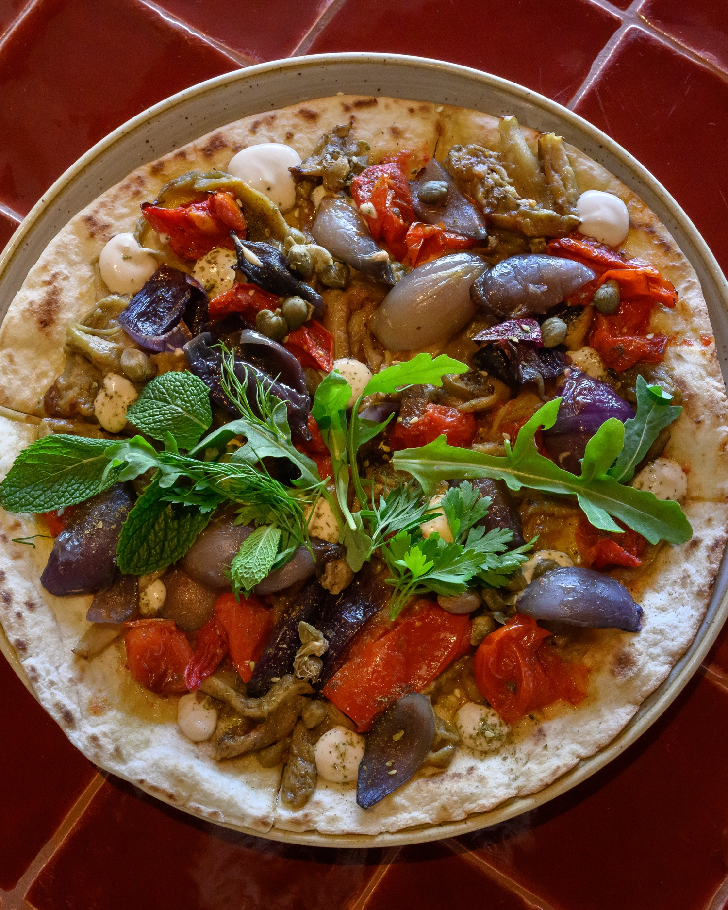
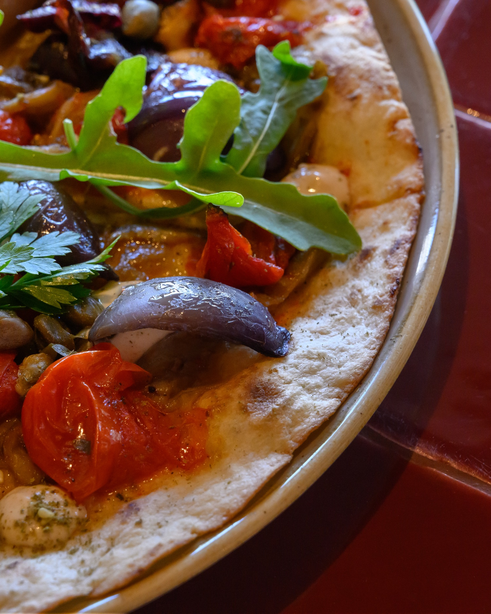
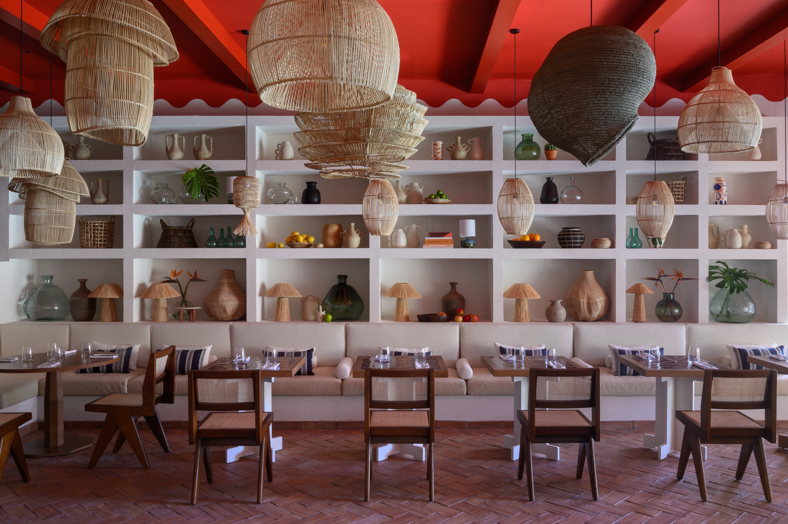
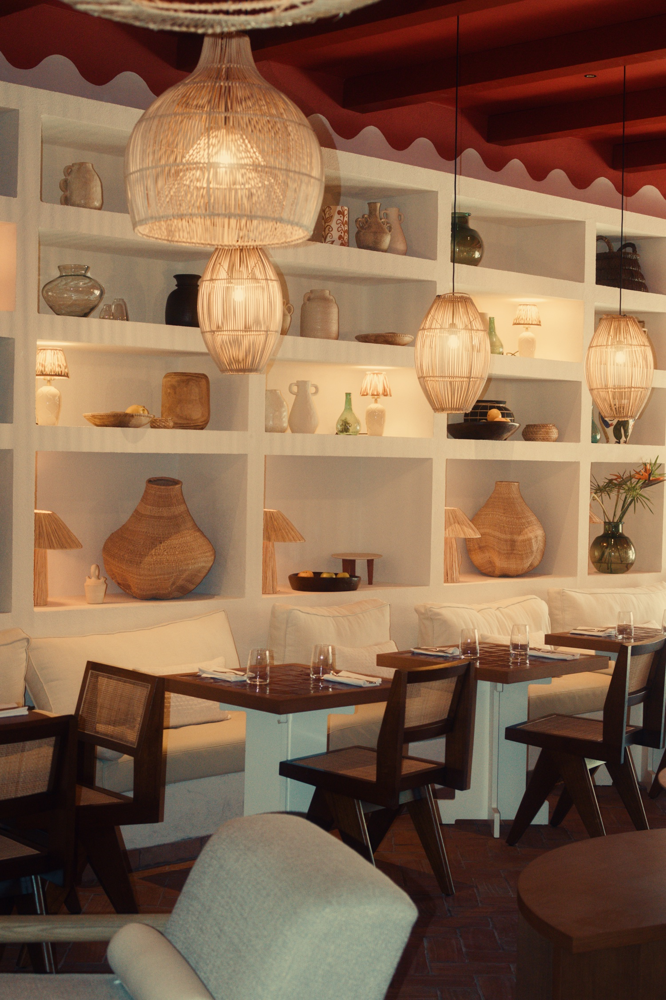
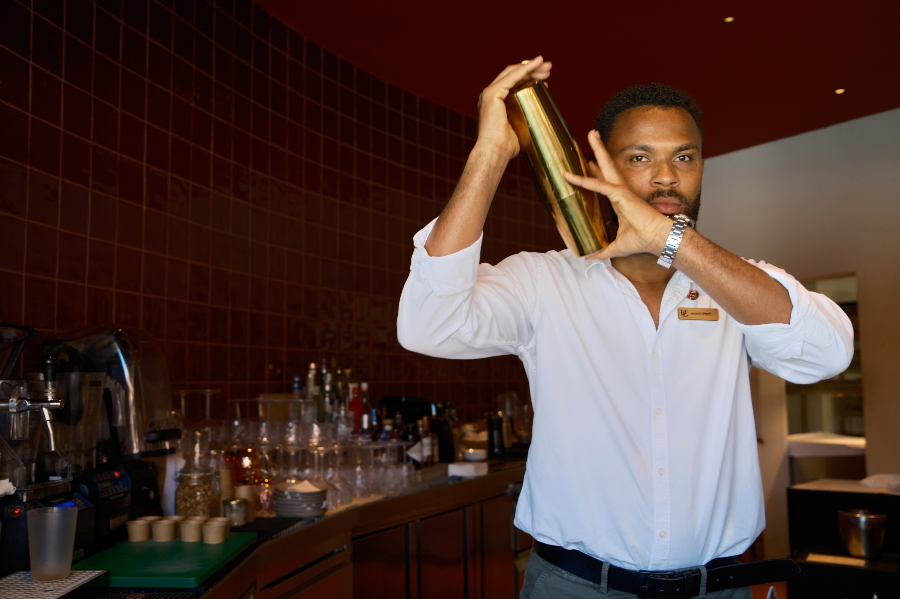

Inspirado pela natureza, guiado pela criatividade e pelo equilíbrio, o Vento reinventa as tradições mediterrânicas num espaço autêntico onde cada prato convida a uma viagem sensorial.
O bem-estar é saboreado em cada textura, em cada cor, em cada momento.
- Aberto
- Todos os dias
- Almoço
- 12h00 – 17h00
- Bar
- 10h30 – 18h00
- Localização
- Junto à piscina das Cascatas
- Cozinha mediterrânica
- Ingredientes locais e sustentáveis
- Dress Code
- Resort Chic

Candeeiros de palha, o teto vermelho e estantes cheias de cerâmica. O Vento é um espaço luminoso junto à piscina das Cascatas, inspirado na natureza.








Pratos mediterrânicos coloridos, pensados para partilhar e saborear devagar, do almoço ao fim da tarde.

Ao balcão, os cocktails são preparados com ingredientes frescos e um toque de criatividade.

Momentos
Um cocktail à beira da piscina, uma tarde de sol, a conversa que não tem pressa.


Todos os dias · 12h00 – 17h00